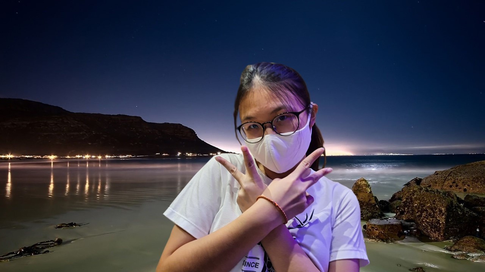
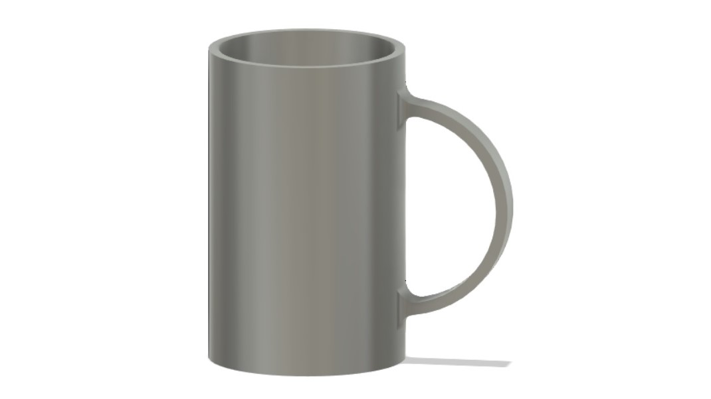

CAD
What I learnt
The lecturer taught us that there was two types of computer graphics, vector and raster. Raster images deals with pixels on the screen and is used for photographs and images while vector images uses mathematical functions and is characterized by clean lines. Raster images usually comes in .jpg and .png while vector images usually comes in .dxf and .svg.
The first task that was given to us was to create a raster image by removing the background of a selfie and replace it with a seaside scene. The result of it is this.

The second task was to make a vector image of an animal by tracing the outline of the image to form the vector art. This is the result of it. The image is not in .svg format as it messes with the layout of the page.
The lecturer then went on to teach us how to use Fusion360. However, I had not actually learnt much in this module as I already had prior experience on using Fusion 360.
In the first class we mainly focused on doing sketches in Fusion 360 and these are the 2 sketches that came out of the practice.

In the second lesson, we were taught how to make the sketches from 2D into 3D through the use of extrude, loft and shell. These are the 3 models that came out of the practice.
In the third lesson, we were taught the revolve and sculpting function and these are the 2 models that came out the practice.

In this lesson was also where we were assigned to make a chesspiece in Fusion360. We were instructed to go online to find an image of a knight chesspiece and trace over it in Fusion360 by inserting the image into the sketch. This is the result of the assignment.
Finally, we moved on to learning about Computer Controlled Cutting. This was where we learnt how to make a .dxf file used for laser cutting. In the class, we were also assigned to make a laptop stand and a music box, these are the results.